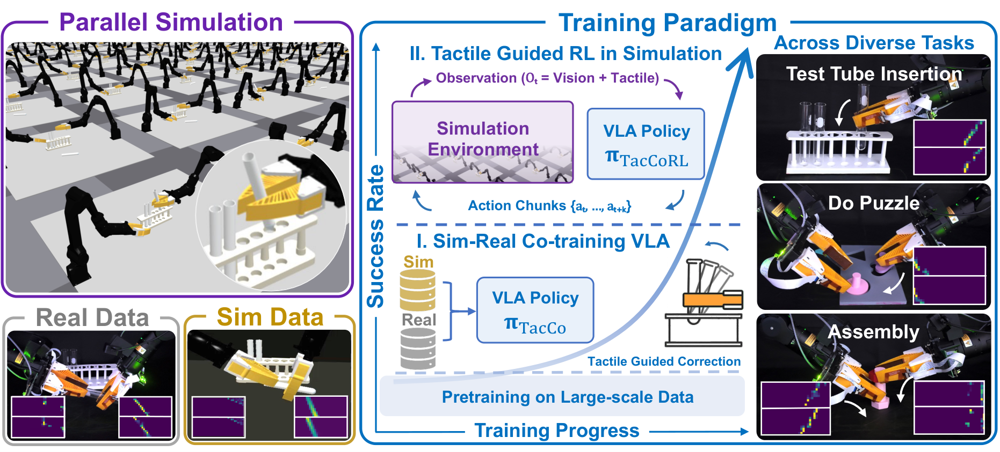
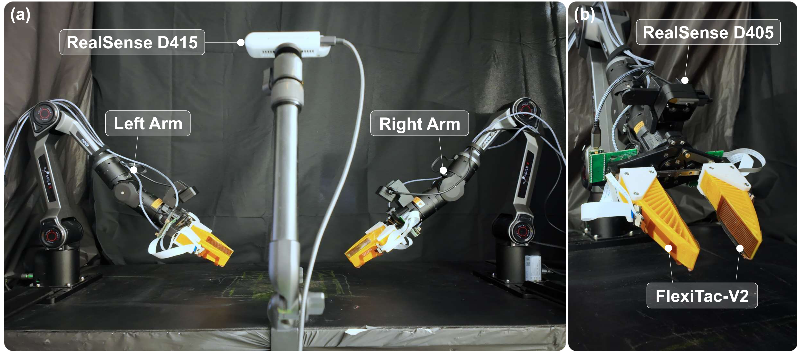

Test Tube Insertion
Demo video placeholder
A two-stage sim-to-real pipeline teaches touch to shape action chunks.
Our framework adapts a pretrained VLA policy to incorporate tactile feedback via a two-stage sim-to-real pipeline. Mixed sim-real co-training first initializes the pretrained policy with a tactile-conditioned action prior learned from both simulation and real-world expert rollouts. Sparse-reward reinforcement learning further refines the policy through interactive simulator rollouts, while real-data supervision regularizes the update toward the real-robot distribution.


Sim-real co-training initializes tactile-conditioned actions.
Real demonstrations are paired with simulated teleoperation data and additional simulated trajectories synthesized under varied initial and object configurations. During co-training, tactile information is routed through contact-aware gating to modulate both the vision-language context and the action expert.
Co-training gives the policy a tactile-conditioned prior grounded in real observations, but it remains fixed-demonstration imitation. It aligns tactile observations with expert action chunks without yet exposing the policy to the consequences of its own contact responses.

Post-training uses simulator rollouts under a real-data anchor.
After co-training, the policy is optimized using its own simulated contact rollouts under sparse task rewards. The actor observes language, images, proprioception, and tactile readings, while privileged simulator state is used only for reward and critic learning during training.
A supervised loss on real trajectories anchors the update to real observations and actions, reducing simulator-specific drift. After post-training, the critic, reward, and privileged state are discarded, and the final policy is deployed directly to the real robot.